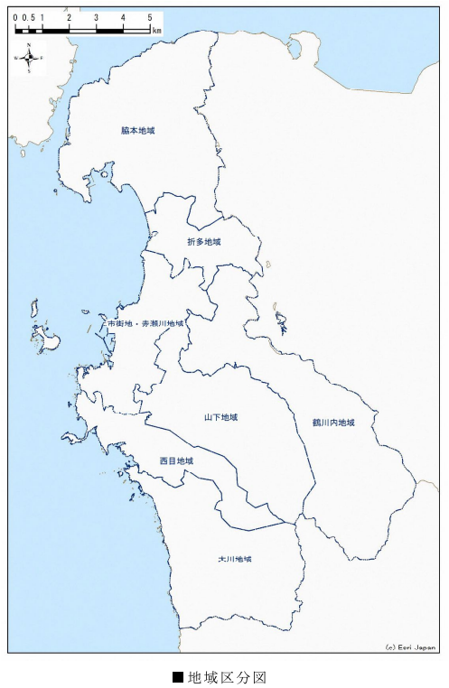

この本の概要
郷土(鹿児島県阿久根市、特に折口地区)関連のメモ。
離れて住むようになってから、住んでいる地域のことについて知らなかったことに気づいた。住んでいる土地に関する知識の継承は、たぶんうまくいっていない。資料や写真さえも少ない。田舎ほど、昔の物や記録は残っていない。関心がないからだ。調べたことを何かしら残しておこう、と思った。
各エントリはナンバリングし、1つのアイデアを表現するものとする。
情報源
- 書籍
- 地理院地図
- スタンフォード大の日本古地図
- その他インターネット
- 実地調査
OR 1: 地域区分
概要
阿久根市の地域分類についてのメモ。
区分

↑地域区分。阿久根マスタープランの地域区分から。
| 地域名 | 定義 |
|---|---|
| 脇本地域 | 大字脇本 ※主に脇本小学校校区を基本とした地域 |
| 折多地域 | 大字折口、多田 ※主に折多小学校校区を基本とした地域 |
| 鶴川内地域 | 大字鶴川内 ※主に鶴川内・田代小学校校区を基本とした地域 |
| 山下地域 | 大字山下 ※主に山下・尾崎小学校校区を基本とした地域 |
| 市街地・赤瀬川地域 | (略) ※主に阿久根小学校校区を基本とした地域 |
| 西目地域 | 大字西目 ※主に西目小学校校区を基本とした地域 |
| 大川地域 | 大字大川 ※主に大川小学校校区を基本とした地域 |
OR 2: 折口の干拓
概要
折口地区は昔海だった。江戸時代に干拓が行われて陸地となった。標高が低く浸水被害があるので、現在はほとんど農地として利用されている。
江戸時代 元禄(=1688〜1704年)
干拓前。

↑薩摩国(元禄)より。湾の中に小島が見えるが、これは位置と名前的に田島だ。現在でも周囲と比べてやや高く両側が川に囲まれている。

↑現在の標高別地図。形がだいたい一致する。地理院地図から高さに色付けして作成。
周辺で育った人なら聞く話しだが、折口は昔あたり一面が海だった。土を掘ると貝殻が出てくる話とセットで語られる。そして地域名の由来は、「海への降り口」である。海でなくなったのは人為的なもので、割と最近であった。
多田村の西に位置し、地元では「おいぐち」とも発音する。西は海（東シナ海）に面し、西流する折口川が注ぐ。南は赤瀬川村、北西は出水郷西目村。折口川河口の入江を折口浜とよぶ。かつてこの入江は折口川をさかのぼって多田村辺りまで入り込み、多田浦とよばれていた。元禄年中（一六八八―一七〇四）この浦の干拓が進み、開発地を中心として多田村から分れた村が当村という（阿久根町郷土誌）。
明治時代
干拓後となる。明治時代の地図を見ると陸地になっている。

↑西海道全圖 1877年 陸軍参謀局
関連
ORD 3: 折口の交通
概要
折口地区の交通がどう形成されてきたかを見る。
江戸時代
江戸時代は特に街道沿いではなかったようだ。折口には何も記載がなく、農村地帯だったように見える。湾は見るからに交通に不便だが、折口川河口部分に渡し舟があったと何かで見たが、忘れた。

↑薩摩国(元禄)より。
明治時代
主要道が阿久根〜野田、阿久根〜脇本になった。現在残っている感じから見る限り、規格は高くない。
- 現在の地名とほぼ同じ
- 現在の国道3号線にあたる道はまだ存在しないか、主要道ではない

昭和時代(前)
交通手段が徒歩や馬の時代から、鉄道や自動車の時代になり、本格的に交通網に取り込まれた。傾斜やトンネルを避けて通されたためか。おそらく国道3号(途中変遷しているから違うかも)、鹿児島本線(これも途中変遷しているから違うかも)が見える。折口駅も開業した。

↑五万分一地形圖 明治34年測量、昭和10年修正
昭和時代(後)
- 戦後土地改良工事が行われ折口川が直線化した
- 同時期に橋がいくつかかけられた
脇本バイパスが完成した。新設されたバイパスに国道389号があてられ、今まで国道389号だった道路を県道365号に降格。

- 旧国道389号線には鉄道との平面交差、狭隘区間があり、脇本地区の物資輸送の妨げとなっていた
平成
高規格幹線道路と接続され、初めて高速交通網に組み込まれた。国道x2、高速道路x1、地域高規格道路(北薩横断道路の計画)x1、肥薩おれんじ鉄道線の結節点となる。地区がちょうど険阻な山あいのなかのちょうどいい平地に位置したというだけだが、利便性が向上している。
- 九州新幹線の開業によって薩摩川内〜八代駅間が第三セクター化した。折口駅は肥薩おれんじ鉄道駅となった。通過する特急が多くを占めていたため、折口駅の停車本数自体は減ったわけではないが不便に
- 南九州西回り自動車道の北阿久根インターチェンジが設置され国道3号、国道389号と接続された。
- 北薩横断道路の終点として設定された(未定)。
関連
ORD: 2。干拓が行われた。
ORD 4: 折口川の歴史
概要
折口川は折口にある2級河川。内陸から海に数キロのびていて、川の周辺は平坦な低地になっている。流れはゆるやかで水質がよくない。折口川まわりのことを書いていく。
土地の来歴として川の流れが平地を作ったというよりは、元は浅い海だった部分を干拓した土地なので、川の流れは多くないのだろう。さらに洪水対策・地質改良で深く掘り下げたことで流れが悪化したのかもしれない。
中世
江戸自体の地図では海になっている。今低地になっている部分は海だったようだ。江戸時代の内海になっているところは現在の地形と大体一致する。今の河口付近から入り込んで大きく湾になっていて、橋がない時代は付け根の部分では渡し船があったということだ(出典?)。今は長めの45メートルの折口橋がかかっている。浜への「降り口」として地名の由来となった。
どこかの地質調査でも、もとは海だったことが明らかになっている。小学校の先生から聞いたことがある。
中世のころの詳しい地図があったとしたら、今の地図とは大きく異なるだろう。街道からも外れていた可能性がある。
大正
大正時代の公開されている地図によると、川はまがりくねっていて、河口付近では二股にわかれていたりする。川幅の差が大きく、河口付近では大きく川幅を広げている。現在の感じを見るにそこまで流量は多くない。沼のような感じだったのではないだろうか。
ORD 5: 折口海岸にあるもの
海岸全体で4キロほどあり、南側の、折口にある部分を折口海岸という。海水浴ができるのは浜の北側で、脇本海岸と呼ばれる。折口海岸も水質に大きく変わりはなさそうだが、一般に河口近くは海流が複雑で泳ぐのは危険である。
岩船
潮流の変化によって砂に埋まってしまい、みることはできない。
堤防があるが、ほとんど見えない位置まで埋まっていて、砂の堆積の速さがわかる。
岩船神社
砂に埋まった岩船の近くにある神社。神社の鳥居は砂防林ぎりぎりの変な位置にあるが、正確に岩船の方向にあるように見える。
記念碑
米軍の戦闘機から守ったとされる戦闘機が遠浅の浜辺に埋まっている。パイロットは砂浜に不時着したが死亡した。記念碑がある。
地形
砂が堆積し、周辺に比べて標高が数メートル高い。その上にはマツが密生している。そのため陸地側から海岸を見ると、浜は全く見えない。
ORD 6: JR時代の阿久根駅の時刻表
時刻表
JR時代の阿久根駅の時刻表。現在では鹿児島側は川内、熊本側は八代までしか行けない。乗り継げばいい話だが。
2001年11月当時の時刻表。

| 時刻 | 熊本方面 上り | 時刻 | 西鹿児島方面 下り |
|---|---|---|---|
| 3 | 3 | ||
| 4 | 4 | 53 ドリームつばめ西鹿児島 | |
| 5 | 5 | ||
| 6 | 37 八代 | 6 | 00 鹿児島 25 さわやかライナー鹿児島 |
| 7 | 23 つばめ博多 36 水俣 | 7 | 10 西鹿児島 51 西鹿児島 |
| 8 | 23 つばめ博多 42 出水(八代) | 8 | 23 さわやかライナー西鹿児島 |
| 9 | 25 つばめ博多 | 9 | 07 寝台特急なは西鹿児島 26 西鹿児島 52 つばめ西鹿児島 |
| 10 | 21 水俣 26 つばめ博多 | 10 | |
| 11 | 28 つばめ博多 | 11 | 05 つばめ西鹿児島 51 つばめ西鹿児島 |
| 12 | 26 つばめ博多 52 出水 | 12 | 52 つばめ西鹿児島 |
| 13 | 25 つばめ博多 | 13 | 25 西鹿児島 52 つばめ西鹿児島 |
| 14 | 25 つばめ博多 | 14 | 25 鹿児島 52 つばめ西鹿児島 |
| 15 | 25 つばめ博多 42 出水 | 15 | 52 つばめ西鹿児島 |
| 16 | 25 つばめ博多 56 八代 | 16 | 52 つばめ西鹿児島 57 西鹿児島 |
| 17 | 26 つばめ博多 | 17 | 52 つばめ西鹿児島 |
| 18 | 04 出水 26 つばめ博多 | 18 | 26 西鹿児島 52 つばめ西鹿児島 |
| 19 | 04 八代 26 つばめ博多 | 19 | 13 西鹿児島 49 つばめ西鹿児島 |
| 20 | 09 寝台特急なは新大阪 24 つばめ博多 57出水 | 20 | 24 西鹿児島 57 つばめ西鹿児島 |
| 21 | 45 ホームライナー出水 | 21 | 53 つばめ西鹿児島 |
| 22 | 36 出水 | 22 | 49 つばめ西鹿児島 |
| 23 | 23 | ||
| 0 | 46 ドリームつばめ博多 | 0 |
ORD 7: 阿久根の七不思議
鍋石
鍋石は、岩船の鍋が石化していると伝えられる大岩。およびその地名。川沿いとはいえなぜこんな内陸にあるんだ、と素朴に考えていたが、昔ここまで海だったので、その頃に作られた話だと考えると不思議ではない。
この地点にある。私有地を通る必要があるためか、特に案内看板などはない。クランク状の農道から田に入った。
地名としての鍋石は、周囲に比べて高台となっている部分である。急傾斜の狭い高台部分にへばりつくように住宅が密集している。低地部分は標高がかなり低く田として利用され、住宅地は少ない。浸水しやすく地盤も悪い。
史跡としての鍋石は、地区の東側の田の中にある大岩をさす。岩の周囲にだけ木が植えられていて、それを目印とすればよい。岩の裏側の築堤上に肥薩おれんじ鉄道線の線路がある。築堤によって線路の向こう側は見えない。線路を挟んだ向こう側には、伊勢神社がある。伊勢神社の鳥居はほぼ?鍋石を向いており?、線路が建設される以前は鍋石を信仰の対象とした神社であったことを思わせる。線路は信仰の対象と神社を分断している。建設当時の開発最優先の時代観を感じる。
伊勢神社は茂った木、線路によって外からまったく見えない位置にある。さびれている。道の手入れはされているし公民館のとなりなので、鍋石地区の人々には親しまれているだろう。往時のベストな景色を見られたならば、もっと知られる名所となっていたかもしれない。高台から見える田園風景は美しかっただろう。
「奇岩を信仰の対象としたが、現在は受け継がれていない」という例が折口にはもう1つある。岩船神社だ。
岩船
岩船は難破した船が折口浦に流れ着き、石化した伝説のこと。現在、岩は折口の堆積した砂浜に沈んでいて。見ることはできない。
ORD 8: 阿久根町郷土史の折口川
昔時槍洗川と称す。水源三あり、一は野田村首谷より、一は鶴川内の山中より出で多田に三流相會す、多田にては多田川と称す。国道付近に於て野田村餅井より来る細流を合せ折口を経て海に注ぐ。長さ一理余河口曲折甚しきを以て折口川と称す。河口は幅狭く水狭きを以て船舶の出入り自由ならず、漸く漁船の繋船に便するのみ。県道に架するを折口橋と言い国道に架するを陣之尾橋と言う。共に凝灰土なり。
『阿久根町郷土史』7ページから
長さ一理余河口曲折甚しきを以て折口川と称す。
海への降り口がたくさんあるから折口という地名に → 折口に流れるから折口川、じゃないのか? どちらが正しいのだろう。
二、折口港
折口川の河口にあり。水浅く河口狭きを以て大船を泊すべからず。只僅に漁船の繋船に便す。
『阿久根町郷土史』11ページから
今と変わりなさそう。
関連
『阿久根町郷土史』1931年 阿久根町郷土史。
メモ
阿久根市折口
人口
昭和28年(1953)5月の学校ごとの人数

各学校の人数。多い。今とは全然異なる。特に大川が多いのが不思議。薩摩街道だったためか? まだ三笠町は合併してないので記載はない。

道路
- 1989年（平成元年）3月29日 - 鹿児島県告示第696号により「鹿児島県道365号折口陣之尾線」が廃止され、告示697号により鹿児島県道365号脇本赤瀬川線として認定される
- 現在の国道389号が開通するまではこの鹿児島県道365号脇本赤瀬川線を国道389号としていた
- 1987年脇本バイパスと呼ばれる区間が開通
- 開通時の記事
- 広報あくね490号 https://www.city.akune.lg.jp/material/files/group/67/kohoS6211.pdf
- 1987年脇本バイパスと呼ばれる区間が開通
観光
大島キャンプ場の人数。重視していたことがわかる。

昭和27年の観光の人数。県で1位だったとのこと(何をもってかわからないが…)。鹿児島県内の旅行先によく選ばれていた時期があると聞いたことがある。

郷土史
赤瀬川の無銘の墓は外国人の墓とのこと。

市街地に橋の印象がないので、どちらも現存してない。なにか跡があるかもしれない。

似たような話は折口にもある。波留にもあった。

中央公園の不動明王の解説。

密貿易の島だったという。上陸は難しいらしい。

阿久根の来歴に関する資料。

折口
陣之尾は養蚕業が盛んだったとのこと。

折多地区土地改良工事中の貴重な写真。ぐちゃぐちゃ。どのへんか不明。

- 阿久根市には平地が少ない。増産の余地のある数少ない田園地帯の1つだった。戦後最優先で建設されたように見える
- 折口川の流路が大きく変わった。以前は蛇行していて、河口付近でふた手に分かれていた。現在は1つになっている
- 1940年代の航空写真で確認できる
- 土地改良工事は昭和26年(1951)から開始され、昭和31年(1956)に完工した
- 阿久根市報のバックナンバーは昭和26年から公開されているが、初期は状態が悪く文字を判別するのが難しい。まだ手書きで写真の掲載はないようなので、記事があったとしても画像を確認するのは難しい。文献を調べる必要がありそう
- 市誌か、新聞のバックナンバーを見る
- 排水 + 土地改良 で構成される

おそらく現存する。ボロい建物だとは思っていた。

小学校の校門と校舎の建設。校門は現存している。

内田の石堤。どこかはよくわからない。


↑排水機場之完成記事。広報あくね 448号
神社
古老の言い伝えによると、神代の昔、御祭神が石樟船に乗りここへ流れ着かれたので祀られたという。当社より五十間ばかりの波限にその石樟船といわれる大岩があり、帆柱を立てた跡や、艫には柁床の跡があり、又、柁は出水郷隼人の瀬戸の柁折の瀬というところにある奇岩がそれであるという。 阿久根市誌(昭和49年刊)1020頁にある言い伝えによれば、建久三年(一一九二)鎌倉幕府の命により、山門院に下向した田上資一が氏神として建立したものといわれている。棟札には「慶長十六亥八月十四日大檀那藤原義虎公 子孫繁昌…」と記されている。 出水風土誌(大正4年刊,昭和51年復刻)523頁によれば 建久三年三月鎌倉の命に依り山門院筒田郷に下向した、上出水村武本田上氏の始祖田江資一(四代目より田上を名乗る)が氏神として創建す。当社の傍らに船形の巨岩あり。田上隠岐守漂着の軍用船化石なり。地理纂考に曰く往古漂着せし唐船の化石であると。
- 民話 広報あくね460号 https://www.city.akune.lg.jp/material/files/group/67/kohoS6005.pdf
地誌
鹿児島県地誌 262ページ付近に折口村、多田村の記載がある。
- 折口村の字地
- 永田原
- 鍋石
- 折口
- 多田村の字地
- 陣之尾
- 黒蕨
- 内田
- 大下
- 大川村3900人。多い
- 多田村470人
- 折口村500人
地図
埋め立てる前の地図。砂浜が町のすぐそばに広がっていたことが確認できる。北部の国道3号線ではまだ陸橋ができていないので、鉄道と国道が立体交差していない。

その他
なんかほほえましい。

体育大会の記録。入賞しまくっている。

黒蕨
『阿久根町郷土史』30ページから。小字に黒蕨というのがある。地図にも記載されているが聞いたことがない。どこにいったのか?
永田原
『阿久根町郷土史』30ページから。小字に永田原とある。現在は永田上、永田下となっている。
大下城
『阿久根町郷土史』51ページから。古戦場。
陣之尾
『阿久根町郷土史』55ページから。古戦場。
永福寺跡
『阿久根町郷土史』61ページから。
五色浜
『阿久根町郷土史』64ページから。名勝。
脇本街道
『阿久根町郷土史』69ページから。当時の県道か。
岩船公園
『阿久根町郷土史』69ページから。
鉄道開通後里人相謀り石船公園として境内に人口を加え社殿を改修し以て**の面目を一新せり境内に日露戦役記念碑あり。又大弓射的場を設備せり神社の南約二町河口の白砂に横はる黒き大岩はこれ即ち岩船なり。
- 景勝としての岩船と、神社としての岩船神社と、公園としての石船は区別しているのだろうか?
- 岩船は黒いのか
鍋石
『阿久根町郷土史』116ページから。
- 筒田は釣田がなまったもの
- 持帆山は帆が流れついたから
- 餅井は餅がなまったもの
- 筒田の人は昔門松を立てなかった
阿久根尋常高等小学校で教えられていた郷土修説集の話からそのままもってきたらしい。当時の作話の可能性もある。
岩船
『阿久根町郷土史』131ページから。地名のところは同じだが流れ着いたのが神様。
- 戸柱公園は戸柱が漂着したから
- 岩船には人の足跡と帆柱を建てる穴があった
道路
『阿久根町郷土史』169ページから。
- 国道は第二号線といったらしい
- 県道。二、折口停車場折口線。三、折口停車場陣之尾線。五、阿久根牛深線
鉄道
『阿久根町郷土史』297ページから。
薩摩大川駅は1931年当時まだない。開業は1936年でほかの阿久根市内の駅より新しい。
川内線が開通したあと、鹿児島本線に改称した。
学校
『阿久根町郷土史』417ページから。
折多尋常小学校。現在の位置に移った経緯。
字は岩掛というらしい。たしかにすごい断崖なので納得できる。
阿久根市地域防災計画にも書いてある。
山下
戦国時代?は山下の城が居城で中心地だった。神社、城跡、墓などいろいろ遺構がある。